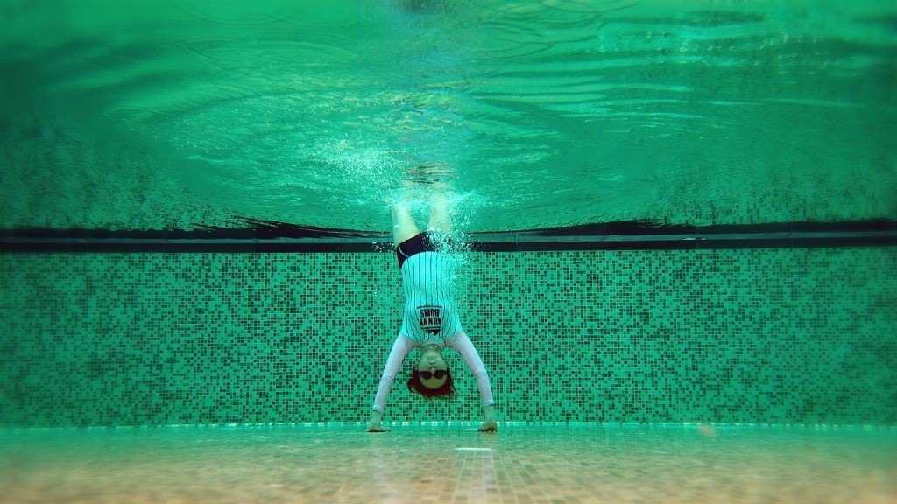

袁姗姗
从滚出娱乐圈到马甲线女王，
运动让易黑体质的袁姗姗一夜之间成了励志女神

陈意涵
35岁的实际年龄，18岁的身体状态
运动让陈意涵拥有了元气少女这一称号
核心要点：尽力保持收腹状态，肚子深处一定会有紧张或酸的感觉。如果肚子没有感觉、胸腔和肋骨明显鼓起，那就是做反了。 其他的用鼻子还是嘴呼吸都是次要的。
核心要点：尽力保持收腹状态，肚子深处一定会有紧张或酸的感觉。如果肚子没有感觉、胸腔和肋骨明显鼓起，那就是做反了。 其他的用鼻子还是嘴呼吸都是次要的。
核心要点：尽力保持收腹状态，肚子深处一定会有紧张或酸的感觉。如果肚子没有感觉、胸腔和肋骨明显鼓起，那就是做反了。 其他的用鼻子还是嘴呼吸都是次要的。
核心要点：尽力保持收腹状态，肚子深处一定会有紧张或酸的感觉。如果肚子没有感觉、胸腔和肋骨明显鼓起，那就是做反了。 其他的用鼻子还是嘴呼吸都是次要的。